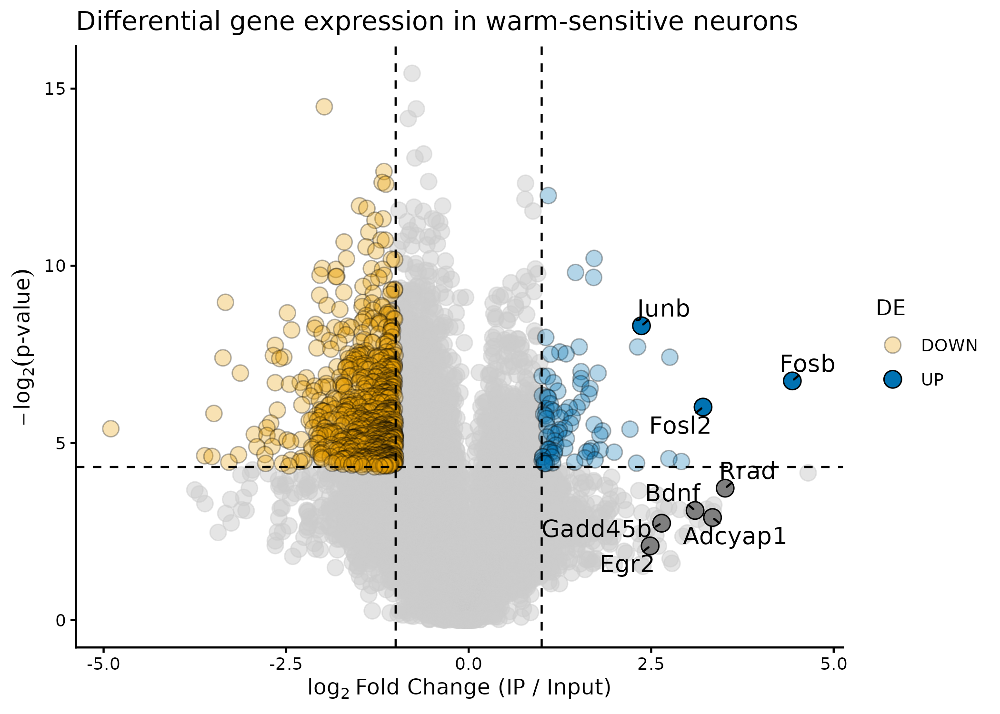
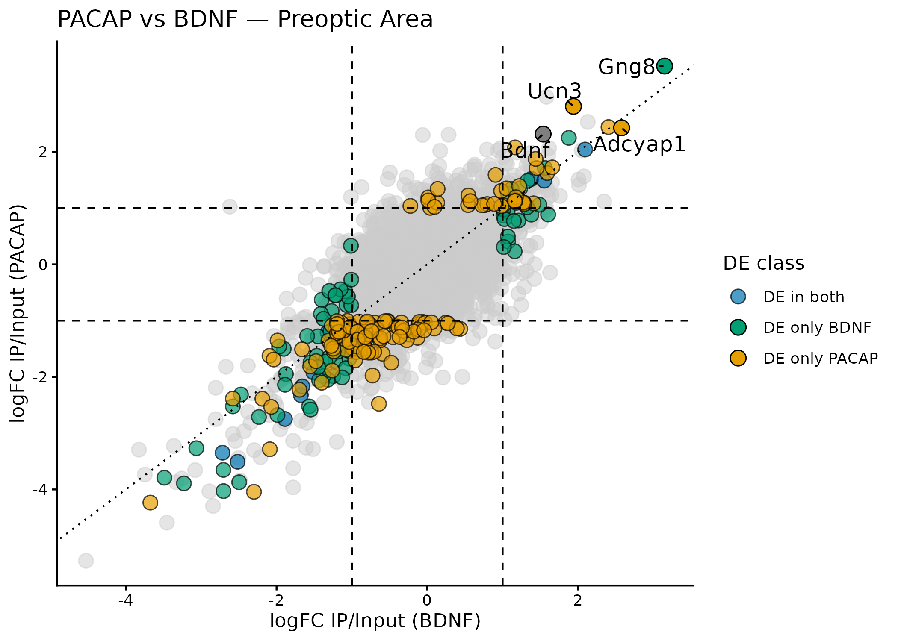

What problem does pTRAPPING solve?
Imagine you want to know which genes are actively being read — translated into protein — in a specific, rare cell type buried inside a complex tissue like the brain. You cannot easily sort those cells out; they are intermingled with hundreds of other cell types. TRAP-seq and PhosphoTRAP are molecular techniques that let you tag ribosomes (the cellular machinery that reads genes) in your target cells, and then pull them out with their attached RNA. The RNA you capture in this immunoprecipitation step — the IP fraction — reflects what your target cells were actively translating. You keep the leftover, un-pulled RNA too — the INPUT fraction — as a reference for total gene expression in the tissue.
The core question is then: which genes are enriched in the IP relative to the input? A gene enriched in IP is being translated in your target population; a gene depleted in IP is present in the tissue but not in your cells of interest. Answering this question requires normalising the data, picking a statistical test, adjusting for multiple comparisons across thousands of genes, and visualising the results — all of which pTRAPPING handles for you with three functions.
PhosphoTRAP adds one more layer: instead of constitutively tagging ribosomes, it captures only ribosomes that carry a phosphorylated form of the S6 protein — a marker of recent neural activation. This means you can ask not just “which genes are translated in these cells?” but “which genes are translated in these cells right now, after a specific stimulus?”. The experimental design is otherwise identical: IP fraction (activated cells’ RNA) vs. INPUT fraction (total tissue RNA).
The example datasets: Tan et al. (2016)
Throughout this vignette we use data from Tan et al. (2016) Cell 167, 47–59, a landmark PhosphoTRAP study in mice.
Dataset 1: Identify warm-sentive neurons Experiment: To identify which genes are highly enriched in warm-sensitive neurons, mice were challenged with heat and phosphorilated ribosomes in neurons that fired in response were isolated by immunoprecipitation. RNA from immunoprecipitates was sequenced and fold-enrichment for each gene was calculated as IP/Input fractions. This data set has RPKM normalized counts (counts per million, scaled by TMM-adjusted library sizes, and divided by gene length in kilobases) for 8863 genes across 3 biological replicates (3 mice - IP and Input sample each).
library(pTRAPPING)
library(dplyr)
library(tibble)
# Pre-computed RPKM values — already normalised; use with norm.method = "none"
warm_counts <- read.delim(
system.file("extdata", "warm_counts.txt", package = "pTRAPPING")
)
dim(warm_counts) # 8863 genes × 9 columns (1 gene-ID + 8 samples)
#> [1] 13724 7
names(warm_counts) # column names encode treatment, fraction, and replicate
#> [1] "Gene" "WC1_INPUT" "WC1_IP" "WC2_INPUT" "WC2_IP" "WC3_INPUT"
#> [7] "WC3_IP"The column names follow the convention pTRAPPING expects: each name
contains a treatment label
(WC - warm-cells), a fraction keyword
(IP or Input), and a replicate
number (1 or 2), in any order and
separated by underscores. The function parses these automatically — no
metadata table needed.
Step 1 — Differential expression with ptrap_de()
ptrap_de() compares the IP fraction to the INPUT
fraction for a given treatment group and returns a ranked table of genes
based on four available methods. Use this table as a quick guide to pick
you model and normalisation method:
| Feature | DESeq2 | edgeR LRT | edgeR QLF | limma/voom |
|---|---|---|---|---|
| Normalization | Median-of-ratios (geometric) | TMM | TMM | Quantile normalization |
| Core assumption | Most genes not DE | Most genes not DE | Most genes not DE | No DE assumption; matches distributions |
| How it works | Per-gene ratio to geometric mean → median ratio = size factor | Weighted mean of log-ratios vs. reference; trims extreme genes | Same as LRT | Forces identical count distributions across all samples |
| What is scaled | Raw counts ÷ size factor | Library sizes (indirect) | Library sizes (indirect) | Full distribution remapped per sample |
| Statistical model | Negative binomial GLM + dispersion shrinkage | NB GLM; likelihood ratio test | NB GLM; quasi-likelihood F-test | Linear model; voom precision weights handle count
variance |
| Test statistic | Wald test (default) or LRT | Chi-squared LRT | F-test with empirical Bayes squeezing | Moderated t/F-test (empirical Bayes) |
| Dispersion estimation | Shared + gene-wise + MAP shrinkage | Common → trended → tagwise | Common → trended → tagwise + QL dispersion | Mean-variance trend via voom
|
| Small sample behavior | Good; shrinkage stabilizes estimates | Conservative; can be anti-conservative with few replicates | Better than LRT with few replicates; QL adds extra variance component | Good; empirical Bayes borrows strength across genes |
| Key functions |
estimateSizeFactors(), DESeq()
|
calcNormFactors(), glmFit(),
glmLRT()
|
calcNormFactors(), glmQLFit(),
glmQLFTest()
|
normalizeQuantiles(), voom(),
lmFit()
|
| Data type | RNA-seq counts | RNA-seq counts | RNA-seq counts | Microarrays (native); RNA-seq via voom
|
| Strengths | Small n; LFC shrinkage | Well-established; fast | More reliable with small n; recommended over LRT for most RNA-seq | Large datasets; microarrays; complex linear models |
| Bioconductor pkg | DESeq2 |
edgeR |
edgeR |
limma |
All three GLM-based methods ("LRT", "QLF",
"deseq") and the LM-based "voom" normalise the
data internally — you do not need to normalise first. For the t-test
methods you can choose a normalisation via norm.method:
norm.method |
When to use |
|---|---|
"CPM" (default) |
Raw counts; comparable across replicates of the same gene |
"RPKM" |
Raw counts + gene lengths available via gene.length;
needed for cross-gene comparisons within a sample |
"mratios" |
Raw counts; DESeq2-style size-factor normalisation |
"none" |
Data already normalised (e.g., a pre-computed RPKM matrix) |
Note on
"RPKM": this option requires you to supply gene lengths viagene.length(a named numeric vector, in base pairs). Without it, the function will throw an error. When you already have a pre-normalised matrix — as in the Tan et al. dataset below — usenorm.method = "none"instead.Note on
filter = FALSE: by default,ptrap_de()removes low-expression genes usingfilterByExpr, which expects raw integer counts. When passing a pre-normalised matrix (RPKM, TPM, or similar), the small floating-point values will mislead the filter and cause real genes to be dropped. Setfilter = FALSEwhenevernorm.method = "none"is used with a pre-normalised input.
Calculating gene fold enrichment and p-values with the paired t-test
We use the paired t-test — the same approach as the original paper.
Tan et al. ran the test on RPKM values, so we pass the pre-normalised
RPKM matrix and set norm.method = "none" and
filter = FALSE to skip any additional normalisation step.
Also, pior.count is set to 0 because RPKM values are already normalised
and do not require a pseudocount.
warm_de <- warm_counts |>
dplyr::filter(dplyr::if_any(dplyr::where(is.numeric), ~ .x > 1)) |> #keep counts > 1
ptrap_de(
treatment_name = "WC", # only one treatment group in this dataset
test_method = "paired.ttest",
norm.method = "none", # data are pre-normalised
filter = FALSE, # skip count-based filtering
prior.count = 0 # no pseudocount needed for RPKM values
)The function prints a message showing what it auto-parsed from the
column names: treatments, replicate numbers (blocks), and fractions. The
argument “paired.ttest” in the test_method argument (as well as
“unpaired.ttest”) returns a named list including $results
and $fe tables. Inspect the result:
# The paired.ttest method always returns a named list
names(warm_de)
#> [1] "results" "fe"
# $results: one row per gene, sorted by p-value
head(warm_de$results)
#> # A tibble: 6 × 7
#> Gene logFC t_statistic PValue FDR treatment diffexpressed
#> <chr> <dbl> <dbl> <dbl> <dbl> <chr> <chr>
#> 1 Xpr1 -0.775 -210. 0.0000226 0.178 WC NO
#> 2 Slain1 -1.98 -152. 0.0000435 0.178 WC NO
#> 3 Larp6 -0.717 -149. 0.0000453 0.178 WC NO
#> 4 Zfp187 -0.827 -135. 0.0000548 0.178 WC NO
#> 5 Gm10032 -0.617 -95.5 0.000110 0.209 WC NO
#> 6 Wars2 -0.735 -91.9 0.000118 0.209 WC NO
$results: per-gene differential expression.
The $results output is a tibble with one row per gene,
sorted by p-value. The columns include log fold change (logFC), p-value,
FDR, and a classification of whether the gene is differentially
expressed (DE) based on user-defined thresholds for logFC and FDR. By
default, the function uses a logFC threshold of 1 (meaning a 2-fold
change) and an FDR threshold of 0.05 to classify genes as “UP” (enriched
in IP), “DOWN” (depleted in IP), or “NO” (not DE).
Understanding the output columns
| Column | What it means |
|---|---|
Gene |
Gene identifier |
logFC |
log2(IP / INPUT) — positive = enriched in target cells |
PValue |
Raw p-value from the paired t-test |
FDR |
Benjamini-Hochberg adjusted p-value (false discovery rate) |
diffexpressed |
"UP" (enriched), "DOWN" (depleted), or
"NO"
|
The diffexpressed column is determined by two thresholds
(both must be met):
-
lfc_threshold— minimum absolute logFC (default1, meaning ≥ 2× change) -
fdr_threshold— maximum FDR (default0.05)
You can change these without re-running the analysis —
ptrap_volcano() and ptrap_volcano2() recompute
the classification from your chosen thresholds.
$fe: per-animal fold enrichments
The paired t-test also returns a $fe tibble with each
animal’s IP/INPUT fold enrichment (FE) for every gene. This is useful
for spot-checking individual genes or running your own downstream
analyses.
# Per-animal fold enrichment for the top 5 genes
head(warm_de$fe, 5)
#> # A tibble: 5 × 5
#> Gene FE_1 FE_2 FE_3 log2_mean_FE
#> <chr> <dbl> <dbl> <dbl> <dbl>
#> 1 0610007C21Rik 0.314 0.627 1.17 -0.507
#> 2 0610007L01Rik 0.930 0.734 0.522 -0.457
#> 3 0610007P08Rik 0.678 0.522 0.315 -0.985
#> 4 0610007P14Rik 0.394 0.848 1.64 -0.0572
#> 5 0610007P22Rik 1.01 1.17 1.11 0.136Step 2 — Visualise the results with
ptrap_volcano()
A volcano plot puts logFC on the x-axis and
statistical significance (-log p-value) on the y-axis. Genes in the
upper-right corner are both strongly enriched
and statistically significant — the most interesting
candidates. Genes in the upper-left are strongly depleted. Grey points
fail one or both thresholds. The argument genes.annot takes
a character vector of gene names to label on the plot. In the example
below, we label highly enriched and known warm-sensitive markers shown
in figure 1D in Tan et al. (2016), including Adcyap1 (PACAP) and
Bdnf.
warm_de$results |>
ptrap_volcano(
fdr = FALSE, # use raw p-values (n=3; FDR is very conservative)
log_base = 2, # -log2(p) on y-axis, matching Tan et al. 2016
genes.annot = c(
"Fosl2",
"Egr2",
"Bdnf",
"Adcyap1",
"Junb",
"Fosb",
"Rrad",
"Gadd45b"
),
point_alpha = 0.3,
title = "Differential gene expression in warm-sensitive neurons"
)
Volcano plot showing known warm-sensitive markers in Tan et al. (2016).
Key arguments:
| Argument | Default | What it does |
|---|---|---|
fdr |
TRUE |
Use FDR (TRUE) or raw p-value (FALSE) for
the y-axis and colouring |
lfc_threshold |
1 |
logFC cutoff for the vertical dashed lines |
fdr_threshold |
0.05 |
p-value cutoff for the horizontal dashed line |
log_base |
10 |
Base of the log transform on the y-axis |
genes.annot |
NULL |
Character vector of gene names to label |
title |
auto | Plot title (defaults to region + treatment) |
Customising colours
Pass a named vector to override the defaults:
warm_de$results |>
ptrap_volcano(
fdr = FALSE,
colors = c("UP" = "#D55E00", "DOWN" = "#56B4E9"),
title = "Volcano plot — custom colours"
)The function returns a ggplot2 object, so you can add or override any layer with standard ggplot2 syntax:
library(ggplot2)
warm_de$results |>
ptrap_volcano(fdr = FALSE) +
theme(plot.title = element_text(face = "bold")) +
xlim(-10, 10)Step 3 — Compare two conditions with
ptrap_volcano2()
Dataset 2: Characterising warm-sensitive neurons Experiment: The authors created BDNF-Cre and PACAP-Cre transgenic mice and used TRAP to sequence the genes expressed in these warm-sensitive neuron populations. This data set has RPKM normalized counts for 8863 genes across 2 biological replicates (2 mice - IP and Input sample each) for both BDNF-Cre and PACAP-Cre lines.
# Pre-computed RPKM values — already normalised; use with norm.method = "none"
counts_rpkm <- read.delim(
system.file("extdata", "TAN_etal_2016_RPKM.txt", package = "pTRAPPING")
)
dim(counts_rpkm) # 8863 genes × 9 columns (1 gene-ID + 8 samples)
#> [1] 8863 9
names(counts_rpkm) # column names encode treatment, fraction, and replicate
#> [1] "Gene" "PACAP_Input_1" "PACAP_IP_1" "PACAP_Input_2"
#> [5] "PACAP_IP_2" "BDNF_Input_1" "BDNF_IP_1" "BDNF_Input_2"
#> [9] "BDNF_IP_2"Run ptrap_de() for both conditions separately to get two
DE result tables, which are the input for
ptrap_volcano2().
pacap_de <- counts_rpkm |>
filter(dplyr::if_any(dplyr::where(is.numeric), ~ .x > 1)) |> #keep counts > 1
mutate(gene = make.unique(Gene)) |>
column_to_rownames("gene") |>
#round() |>
ptrap_de(
test_method = "paired.ttest",
norm.method = "none",
treatment_name = "PACAP",
filter = FALSE,
lfc_threshold = 0.3,
prior.count = 0
)
# Inspect the per-gene fold enrichment
pacap_de$fe
#> # A tibble: 8,863 × 4
#> Gene FE_1 FE_2 log2_mean_FE
#> <chr> <dbl> <dbl> <dbl>
#> 1 Adcyap1 7.87 6.64 2.86
#> 2 Bdnf 4.98 10.1 2.91
#> 3 Ucn3 6.80 30.4 4.22
#> 4 Gng8 8.47 18.6 3.76
#> 5 Nme4 5.26 15.3 3.36
#> 6 Nxph4 11.0 20.6 3.98
#> 7 Hist1h2bg 13.5 1.72 2.93
#> 8 Ghrh 4.41 9.91 2.84
#> 9 Hist1h4m 5.54 4.82 2.37
#> 10 Samd3 5.44 6.43 2.57
#> # ℹ 8,853 more rows
bdnf_de <- counts_rpkm |>
filter(dplyr::if_any(dplyr::where(is.numeric), ~ .x > 1)) |> #keep counts > 1
mutate(gene = make.unique(Gene)) |>
column_to_rownames("gene") |>
#round() |>
ptrap_de(
test_method = "paired.ttest",
norm.method = "none",
treatment_name = "BDNF",
filter = FALSE,
lfc_threshold = 0.3,
prior.count = 0
)
# Inspect the per-gene fold enrichment
bdnf_de$fe
#> # A tibble: 8,863 × 4
#> Gene FE_1 FE_2 log2_mean_FE
#> <chr> <dbl> <dbl> <dbl>
#> 1 Adcyap1 6.16 9.05 2.93
#> 2 Bdnf 2.77 5.30 2.01
#> 3 Ucn3 14.3 7.96 3.47
#> 4 Gng8 7.38 12.7 3.33
#> 5 Nme4 9.51 4.21 2.78
#> 6 Nxph4 3.35 4.66 2.00
#> 7 Hist1h2bg 0.400 14.2 2.87
#> 8 Ghrh 6.31 5.17 2.52
#> 9 Hist1h4m 15.2 0.455 2.97
#> 10 Samd3 4.85 7.39 2.61
#> # ℹ 8,853 more rowsBDNF and PACAP cells co-express both BDNF and PACAP genes and almost the same set of genes, including Unc3, Nxph4, Ghrh, etc.
Then ptrap_volcano2() places both results on a single 2D
scatter plot:
- x-axis: logFC for condition 2
- y-axis: logFC for condition 1
- Diagonal (dotted): genes enriched equally in both
- Above diagonal: more enriched in condition 1
- Below diagonal: more enriched in condition 2
Genes that meet the significance thresholds in both conditions, in only one, or in neither are shown in distinct colours.
ptrap_volcano2(
de_result_1 = pacap_de$results,
de_result_2 = bdnf_de$results,
fdr = FALSE,
title = "PACAP vs BDNF — Preoptic Area",
genes.annot = c(
"Adcyap1",
"Bdnf",
"Ucn3",
"Gng8",
"Nxph4",
"Ghrh",
"Emx2",
"Fezf1",
"Nhlh2"
)
)
Scatter comparison of PACAP and BDNF enrichment. Genes on the diagonal are enriched equally in both conditions.
Genes near the diagonal are similarly enriched in both PACAP and BDNF cells.
Customising colours
The three DE classes are named after the treatment labels in your
data. Pass a colors vector using those names:
ptrap_volcano2(
pacap_de$results,
bdnf_de$results,
fdr = FALSE,
colors = c(
"DE in both" = "#D55E00",
"DE only PACAP" = "#0072B2",
"DE only BDNF" = "#009E73"
)
)Common issues
- “Cannot identify IP/INPUT fraction in column name”
-
The parser could not find an IP or INPUT keyword. Check your column
names and use
ip_level/input_levelto match your exact spelling (e.g.,input_level = "Input"for mixed case). - “Cannot identify a replicate number in column name”
-
Every sample column must contain a digit for the replicate number (e.g.,
1,2,10). Add a number to your column names or supplysample_dfmanually. - FDR column is all
NAor very few significant genes -
With n = 2, multiple-testing correction is extremely conservative. Try
fdr = FALSEin the volcano functions. With ≥ 4 replicates and a GLM method, FDR-based calls are more reliable. norm.method = "RPKM"requiresgene.length-
Gene lengths (in base pairs) must be provided as a named numeric vector
whose names match the gene IDs in your count matrix. These are available
from annotation packages such as
TxDb.*or via BioMart. If you already have a pre-normalised RPKM matrix, usenorm.method = "none"instead — no lengths needed.